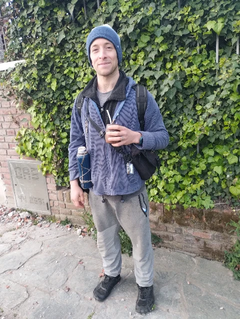
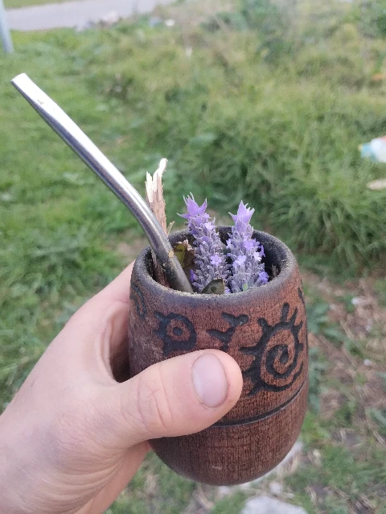
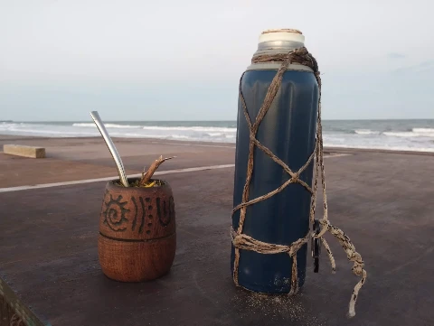
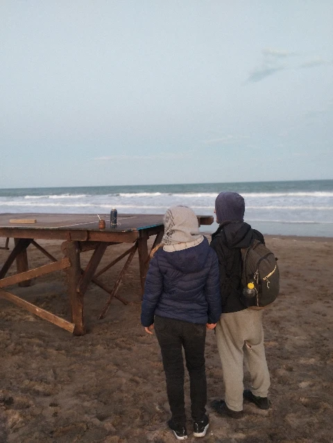
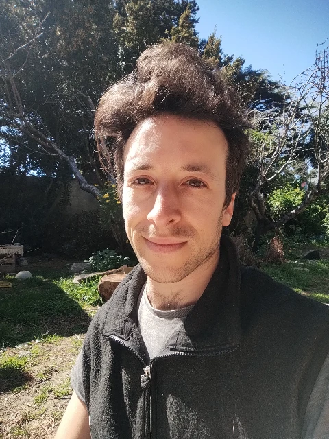

Visibility

Hey
My name is Ezequiel Adrián Schwartzman
I'm an open source commons developer working on Gaia's Team
I'm creating the Web Jam Editorhttps://webjam.spacehttps://github.com/zequez/web-jam-editor


You can find my previous work at https://web7.ezequielschwartzman.org

